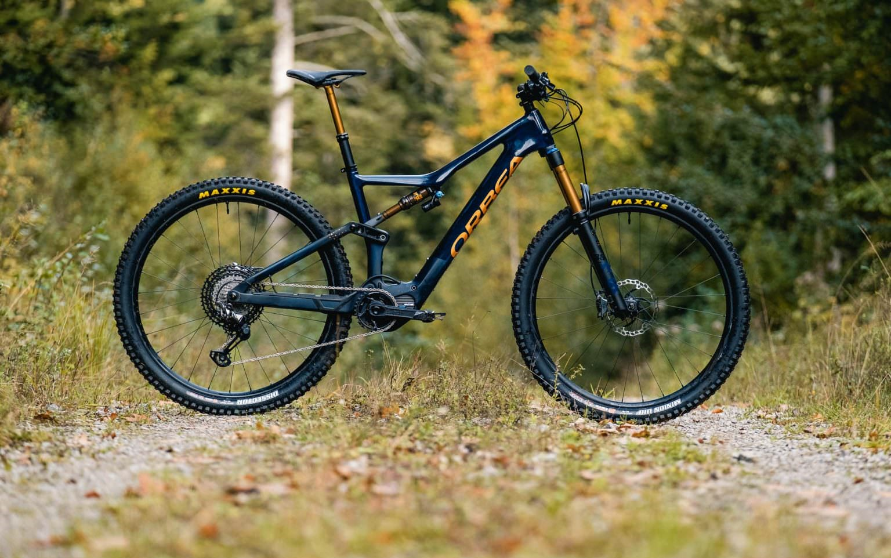
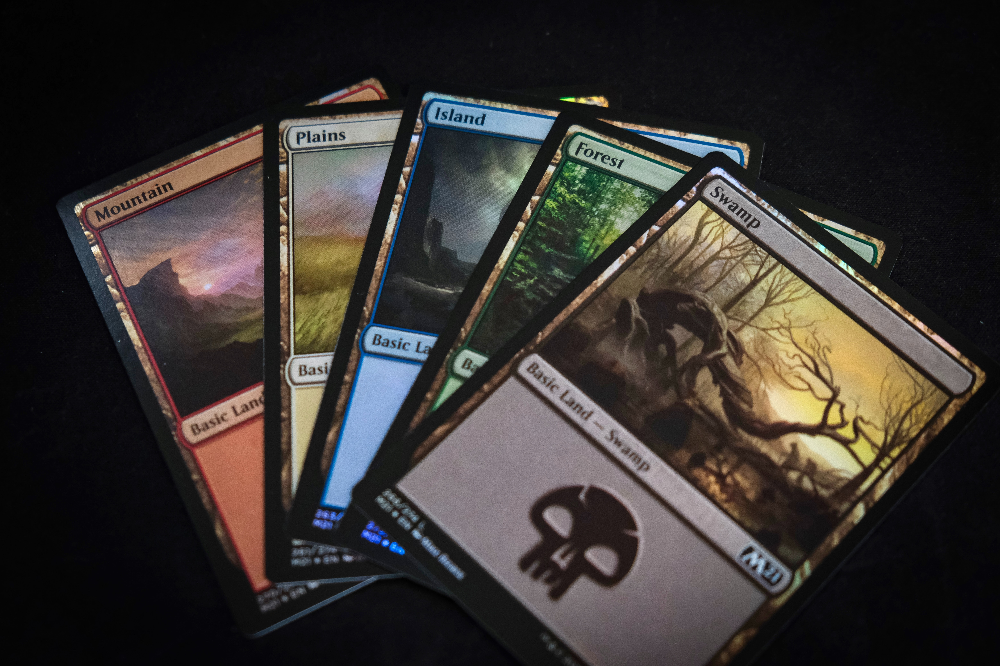

Hobbies
Dit is een korte samenvatting van mijn interesses met een paar foto's.

Motorrijden
Mijn hobby is circuitrijden, door de aankoop van mijn motor moest ik het echt eens gedaan hebben. Na de eerste keer was ik meteen verkocht. Het geeft echt een kick om zo snel door de bochten te gaan.

Mountainbike
Als ik aan mijn conditie wil werken en in de natuur wil zijn dan neem ik mijn mountainbike. Daar kan ik echt van genieten om in men eentje tussen de bomen te rijden en al de geluiden en geuren in me op te nemen.

Magic TCG
Wanneer het allemaal niet snel of sportief hoeft te zijn, dan speel ik magic the gathering. Dit is een tactisch kaartspel waar je de tegenstander zo snel mogelijk op 0 levenspunten moet krijgen.